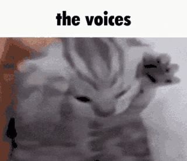

2024-04-19
Surprise! I know, I know this is totally unforseen. It's not like the site has a less than cohesive style, looks like shit, and has an abhorrent font. Who could have possibly predicted that I would rewrite the whole thing. Let's not forget the fact that half the features I added don't even work. Visitor counter? Yeah it resets every 15 minutes and doesn't save values to disk so in the event of a server crash, the data is lost. To top it all off, I never even finished the site banner, nor submited the banner and site to the lainchan webring, which was the whole intent with writing this piece of shit in the first place lmao. It's been a while since my last update and that honestly has just been due to a lack of motivation. But I'm back now and with a refreshed will to develop this place, and learn more web-dev. I've been programming for a long time, more than a decade at this point, and web-dev has always just remained a sort of abstract out of reach interest, that I never put any real effort into. No better time to hop into it's depths than right now!
So with that out of the way, what are my plans? First of all I am going to switch up the theme to a night time winter cabin type of feel. Thinking of having a star sky background that twinkles and maybe toy around with the idea of matching the current lunar cycle. One of my hobbies is Astrophotography and so integrating the pictures ive taken into my site just feels right. I am going to stick with the low fidelity style though. Nothing high resolution, or computationally intensive. I want the site to be fast to load, and as responsive as possible. Imagine the polar oppisite of the current version of reddit, as of writing. Small memory footprint, and snappy UX.
Now for content, which the current version of this site very much lacks, I have a few different things in mind. First up is a dream journal of sorts. I saw this on halogenstars neocities [site] and thought it was really cool. Besides, it's been an idea I have toyed with for a long time. I started and stopped keeping a journal many times in the last 7 or so years but never really kept with it. Now integrating it into my site will give me a dedicated place to write things out on my computer instead of with pencil and paper. I've never been much of a writer so something like this really is out of my realm of expertise, but life is about learning and trying new things. Maybe I'll actually love it who knows? Regardless, I have days where I feel almost schizophrenic so it will be nice to have a place to organize and layout the chaos that is my head while I sleep.
Of course I will continue with the stuff that I currently have up here, although I will try and do so with more regularity and better quality. This means an updated about and contact page, as well as more frequent updates like this one. Part of the reason I haven't done much with this site was the conflits I was having with githubs credentials system on my desktop. For some reason keeping 2 accounts on the same system was causing a lot of issues so I switched everything related to this site on to my laptop. This took some time, primarily finding the will to move everything over and setup the development enviroment. Now that it's all going however, the barrier to development has been substantially lowered.
So most of the things I have mentioned thus far, have been pre-existing, that being they already exist in some form or another on the site as it is now. So let's talk about the new ideas I have that aren't just aesthetic. One of those being a content hub. I want a page where people can see and explore the things I'm into. A straight forward way to share my interests with others. This will contain a directory of things. Stuff like youtube channels I enjoy, anime, music, books, and other websites. I am debating if I should store the media directly, or just link to it. See with the rate of link rot, statistically half the links to the media I share will be dead in less than 5 years. That's makes things a pain in the ass to maintain. On the other hand, storing things gets expensive fast if I want to have them there for any lenght of time. So if I do go down that road I will have to keep all the media fairly compressed to keep the site underneath the github free tier repo size limit. That means I have somewhere around 1 and 1/2 gigabytes to play with. That isn't very much, but I will have to look into long term storage more.
There is so much more I'd like to talk about but this post is long enough as is. I seriously doubt many people will see this site, nevermind find this particular post, and read this far. But for the few of you who did, thanks for reading my poorly formatted stream of conciousness. It's very late as I finish writing this, like 04:35 and I have I have stuff to do tomorrow, despite being a neet, so I will finish this another day, with a follow up post. Cr0bar out.